CYLINDER HEAD > INSPECTION |
| 1. CLEAN CYLINDER HEAD SUB-ASSEMBLY |
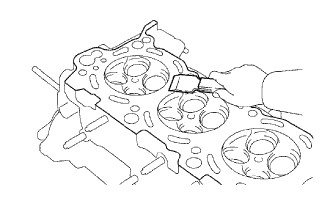 |
Using a gasket scraper, remove all the gasket material from the cylinder block contact surface.
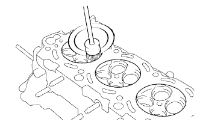 |
Using a wire brush, remove all the carbon from the combustion chambers.
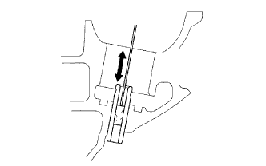 |
Using a valve guide bushing brush and solvent, clean all the guide bushes.
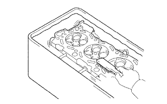 |
Using a soft brush and solvent, thoroughly clean the cylinder head.
| 2. INSPECT CYLINDER HEAD SUB-ASSEMBLY |
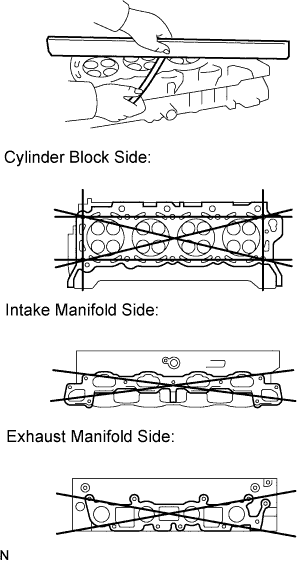 |
Using a precision straightedge and feeler gauge, measure the surfaces contacting the cylinder block and manifolds for warpage.
| Item | Specified Condition |
| Cylinder block side | 0 to 0.05 mm (0 to 0.00197 in.) |
| Intake manifold side | 0 to 0.08 mm (0 to 0.00315 in.) |
| Exhaust manifold side | 0 to 0.08 mm (0 to 0.00315 in.) |
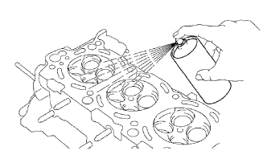 |
Using a dye penetrant, check the combustion chamber, intake ports, exhaust ports and cylinder block surface for cracks.
If the cylinder head is cracked, replace it.
| 3. INSPECT INTAKE VALVE |
Clean the valves.
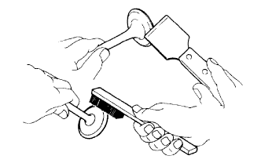 |
Using a gasket scraper, chip off any carbon from the valve head.
Using a wire brush, thoroughly clean the valve.
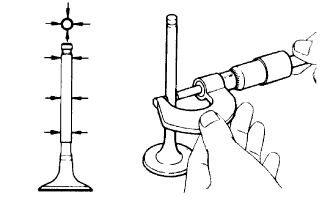 |
Using a micrometer, measure the diameter of the valve stem.
Check the valve face angle.
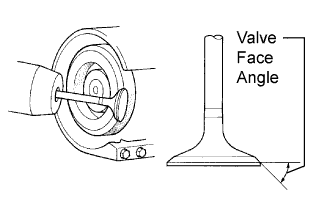 |
Grind the valve sufficiently to remove pits and carbon.
Check that the valve is ground to the correct valve face angle.
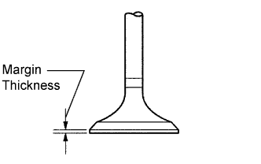 |
Check the valve head margin thickness.
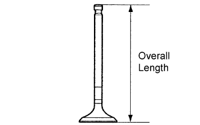 |
Check the valve overall length.
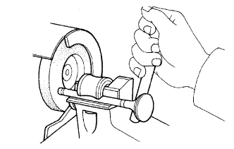 |
Check the surface of the valve stem tip for wear.
If the valve stem tip is worn, resurface the tip with a grinder or replace the valve.
| 4. INSPECT EXHAUST VALVE |
Clean the valves.
 |
Using a gasket scraper, chip off any carbon from the valve head.
Using a wire brush, thoroughly clean the valve.
 |
Using a micrometer, measure the diameter of the valve stem.
Check the valve face angle.
Grind the valve sufficiently to remove pits and carbon.
Check that the valve is ground to the correct valve face angle.
Check the valve head margin thickness.
Check the valve overall length.
Check the surface of the valve stem tip for wear.
If the valve stem tip is worn, resurface the tip with a grinder or replace the valve.
| 5. INSPECT INTAKE VALVE GUIDE BUSH |
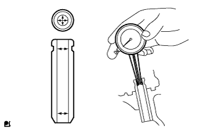 |
Using a caliper gauge, measure the inside diameter of the guide bush.
Subtract the valve stem diameter measurement from the guide bush inside diameter measurement.
| 6. INSPECT EXHAUST VALVE GUIDE BUSH |
Using a caliper gauge, measure the inside diameter of the guide bush.
Subtract the valve stem diameter measurement from the guide bush inside diameter measurement.
| 7. INSPECT INTAKE VALVE SEAT |
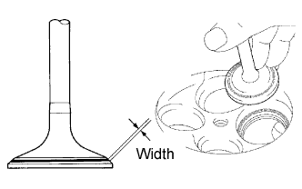 |
Apply a light coat of Prussian blue to the valve face.
Lightly press the valve against the seat.
Check the valve face and seat.
Check that the contact surfaces of the valve seat and valve face are in the middle area of their respective surfaces, with the width between 1.0 to 1.4 mm (0.0394 to 0.0551 in.).
If not, correct the valve seat.
Check that the contact surfaces of the valve seat and valve face are even around the entire valve seat.
If not, correct the valve seat.
| 8. INSPECT EXHAUST VALVE SEAT |
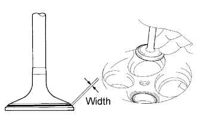 |
Apply a light coat of Prussian blue to the valve face.
Lightly press the valve against the seat.
Check the valve face and seat.
Check that the contact surfaces of the valve seat and valve face are in the middle area of their respective surfaces, with the width between 1.0 to 1.4 mm (0.0394 to 0.0551 in.).
If not, correct the valve seat.
Check that the contact surfaces of the valve seat and valve face are even around the entire valve seat.
If not, correct the valve seat.
| 9. INSPECT INNER COMPRESSION SPRING |
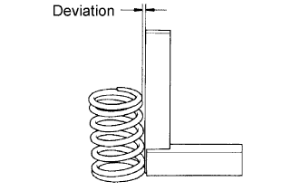 |
Using steel squares, measure the deviation of the spring.
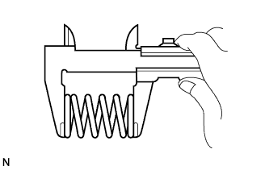 |
Using a vernier caliper, measure the free length of the spring.
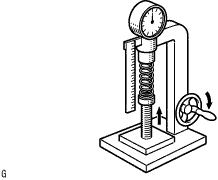 |
Using a spring tester, measure the tension of the inner compression spring when it is compressed to the specified installation length.
| 10. INSPECT VALVE LIFTER |
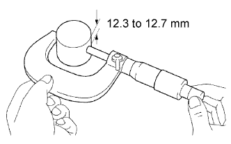 |
Using a micrometer, measure the lifter diameter at a position 12.3 to 12.7 mm (0.484 to 0.500 in.) from the top surface.
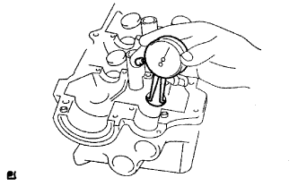 |
Using a caliper gauge, measure the lifter bore diameter of the cylinder head.
Subtract the lifter diameter measurement from the lifter bore diameter measurement.
| 11. INSPECT CAMSHAFT THRUST CLEARANCE |
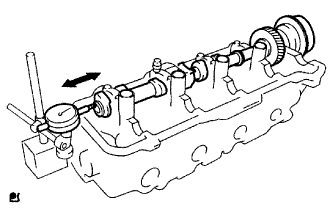 |
Inspect the clearance on the intake side.
Install the camshaft.
Using a dial indicator, measure the thrust clearance while moving the camshaft back and forth.
Remove the camshaft.
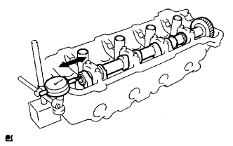 |
Inspect the clearance on the exhaust side.
Install the camshaft.
Using a dial indicator, measure the thrust clearance while moving the camshaft back and forth.
Remove the camshaft.
| 12. INSPECT CAMSHAFT GEAR BACKLASH |
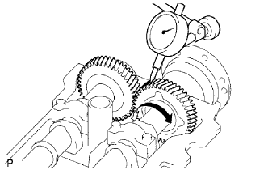 |
for Bank 1:
Install the drive gear to the camshaft timing tube.
Install the camshaft timing tube to the No. 3 camshaft.
Install the No. 3 camshaft and No. 4 camshaft without installing the camshaft sub-gear and No. 5 bearing cap.
Using a dial indicator, measure the backlash.
Remove the No. 3 camshaft and No. 4 camshaft.
Remove the camshaft timing tube from the No. 3 camshaft.
Remove the drive gear from the camshaft timing tube.
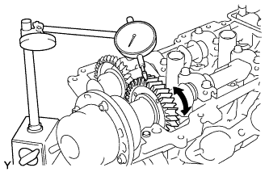 |
for Bank 2:
Install the drive gear to the camshaft timing tube.
Install the camshaft timing tube to the camshaft.
Install the camshaft and No. 2 camshaft without installing the camshaft sub-gear and No. 1 bearing cap.
Using a dial indicator, measure the backlash.
Remove the camshaft and No. 2 camshaft.
Remove the camshaft timing tube from the camshaft.
Remove the drive gear from the camshaft timing tube.
| 13. INSPECT CAMSHAFT OIL CLEARANCE |
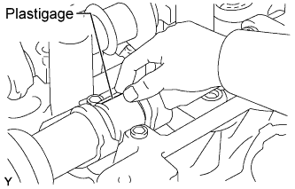 |
Clean the bearing caps and camshaft journals.
Check the bearings for flaking and scoring.
If the bearings are damaged, replace the cylinder head sub-assembly.
Place the camshafts on the cylinder head.
Lay a strip of Plastigage across each of the camshaft journals.
Install the bearing caps.
Remove the bearing caps.
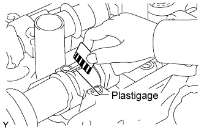 |
Measure the Plastigage at its widest point.
Remove the camshafts.
Completely remove the Plastigage.